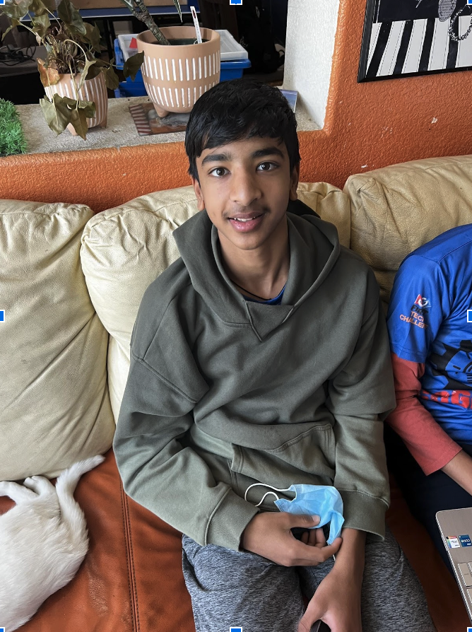
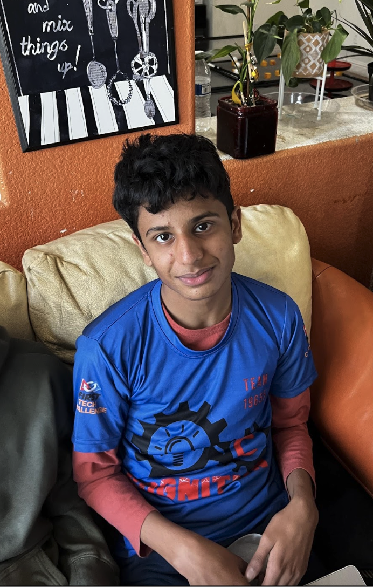
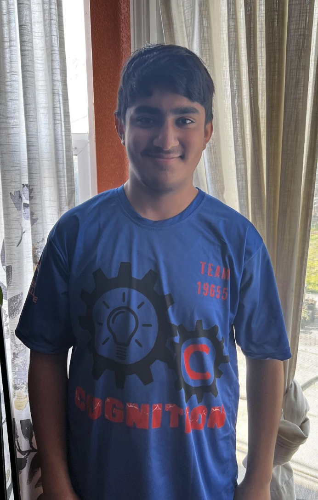

Our team was founded at the beginning of 2021 as a new version of the legendary team Thunderbots. Most of us were just entering high school or even younger. At this time, our only experience was with FLL and block-based programming.
Therefore, we faced a learning curve when it came to learning with Java. However, we were initially taught Java by a veteran of the software programming industry who was instrumental in helping us take off.
Our Team

Hello, my name is Abhinav Lingam and I am 15 years old. I am the programmer on this team. I work with Aryan and Arnav to create programs and use what our builders, Nishi, Sahil, and Sriram come up with. Apart from robotics, I also do Track and Field for my school and Taekwondo. One of the things that I enjoy doing in my free time is playing basketball and football with my friends. My favorite food is pizza(without pineapple of course!).

Hello, my name is Arnav Mahendra and I am 15 years old. On this team my official role is programmer and also am a part of the Engineering Notebook team. I work with my fellow programmers Abhinavand Aryan to create programs and efficiently use the hardware that our builders: Nishi, Sahil, and Sriram create. Along with the Cognition team, I am also a member of my school’s debate team as well as the FBLA team. One of the things that I enjoy doing in my free time is playing basketball with my friends. My favorite food is pizza(with pineapple of course!).

Hello, my name is Sahil Trivedi, and I am 15 years old. On this team, my official role is one of the builders. I work with my whole team, but mostly with the other builders. Together, we build numerous systems for the robot. I have lots of experience in robotics and for many years. I was in an FLL team for 3 years and was active for those three years, I was also in a robotics team for my school for about 4 years. I enjoy building hands with my team. I also like playing games like Minecraft and Valorant.
My name is Nishanth Karanam, and currently, I am 15 years old. I occupy the role of lead engineer/builder and CAD designer on this team, and along with Sahil and Sriram, we build the most efficient attachments to solve every problem we come across within the FTC season. Being an avid supporter of FLL and Robotics for a very long time, I and the rest of the team believe very strongly that all students should participate in some form of Robotics and engineering. I have participated in my school’s Science Olympiad team for a very long time with a focus on Earth and Space Sciences. Sadly, I don’t have much free time to complete my hobbies.
My name is Sidharth Nair, and I am 15 years old. This is my sixth year with FIRST. I am in 9th grade. I am the team Captain for Cognition and help wherever it is needed in addition to facilitating and planning out all of our meetings. My favorite food is naan and chicken tikka. Some of my hobbies include playing basketball, guitar, playing around with my laptop, and reading.